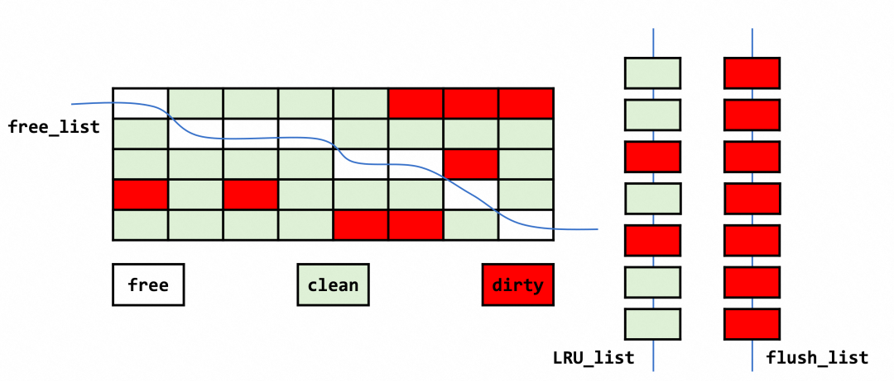

Buffer Pool
一、概述
缓冲池（Buffer Pool）是主内存中的一个区域，它主要用于缓存数据库中的数据和索引，以减少直接从磁盘进行IO操作的次数，从而提高数据库的性能。在专用服务器上，高达 80% 的物理内存通常分配给缓冲池。
为了提高大容量读取操作的效率，缓冲池被划分为可以容纳多行的页面。为了提高缓存管理的效率，缓冲池被实现为页面的链表，使用LRU算法的变体，很少使用的数据会从缓存中老化。
二、组织结构
为了减少并发访问的冲突，InnoDB将Buffer Pool划分为一个或多个Buffer Pool Instances，每个Instance之间没有锁冲突，每个Page固定属于其中一个Instance。从结构上看每个Instance都是对等的，单个Instance的数据结构为buf_pool_t，因此本文接下来的内容都以一个Instance来进行介绍的。
- 通过
innodb_buffer_pool_size设置缓冲池总大小
mysql> show variables like 'innodb_buffer_pool_size'; //128M
+-------------------------+-----------+
| Variable_name | Value |
+-------------------------+-----------+
| innodb_buffer_pool_size | 134217728 |
+-------------------------+-----------+
1 row in set (0.00 sec)
- 通过
innodb_buffer_pool_instances设置缓冲池实例数
mysql> show variables like 'innodb_buffer_pool_instances';
+------------------------------+-------+
| Variable_name | Value |
+------------------------------+-------+
| innodb_buffer_pool_instances | 1 |
+------------------------------+-------+
1 row in set (0.20 sec)
2.1 Buffer Chunks
在MySQL 5.7.5之前，Buffer Pool只能在启动时通过innodb_buffer_pool_size参数来调整大小。在MySQL 5.7.5及之后的版本中支持在数据库运行过程中调整Buffer Pool大小。为此，InnoDB存储引擎将一个Instance划分为若干个Chunk组成，每次向操作系统申请缓存时就以一个Chunk为单位。其数据结构为buf_chunk_t。
- 通过参数
innodb_buffer_pool_chunk_size设置Chunk大小
mysql> show variables like 'innodb_buffer_pool_chunk_size';
+-------------------------------+-----------+
| Variable_name | Value |
+-------------------------------+-----------+
| innodb_buffer_pool_chunk_size | 134217728 |
+-------------------------------+-----------+
1 row in set (0.00 sec)
需要注意的是：
innodb_buffer_pool_chunk_size默认情况下大小为128M，只能在数据库启动时设置，不能在运行期间修改，以保证每次向操作系统申请的连续空间大小一致。
- Buffer Pool Size、Instance、Chunk关系
InnoDB存储引擎规定了innodb_buffer_pool_size必须是innodb_buffer_pool_chunk_size 乘以 innodb_buffer_pool_instances的倍数。假如我故意修改参数值使其不满足上面这个关系，那么InnoDB会自动调整变量值，使其满足上述关系。细节我就不赘述了，可以看官网说明，这里详细讲述了三者关系：Configuring InnoDB Buffer Pool Size
2.2 Block、Page
InnoDB存储引擎将分配的内存（Chunk）划分为大小相等的Block，同时为每一个Block都分配了一个内存管理结构buf_block_t，用来维护Block相关的状态信息、加锁信息、内存数据结构指针等。Block是Page在内存中的载体，真正的数据页就保存在Block中，其部分代码如下：
/** The buffer control block structure */
struct buf_block_t {
/** page information; this must be the first field, so
that buf_pool->page_hash can point to buf_page_t or buf_block_t
*/
buf_page_t page; //page页数据结构
/** read-write lock of the buffer frame */
BPageLock lock;
/** pointer to buffer frame which is of size UNIV_PAGE_SIZE,
and aligned to an address divisible by UNIV_PAGE_SIZE */
byte *frame;
......
}
Buffer Chunks中控制块被存放到前边，缓存页被存放到后边，控制块中buf_block_t通过指针指向block，其结构大致如下所示：
在InnoDB启动时，默认使用mmap来分配内存。 分配之后通过buf_chunk_init函数初始化Buffer Chunks，因此InnoDB在启动时并不会真正占用这么大的物理内存，而是随着Page的分配不断上涨的。每个buf_block_t都对应一个Block，那在分配足够多的buf_block_t和Block后，可能剩余的那点儿空间不够一对buf_block_t和Block的大小，这个用不到的那点儿内存空间就被称为碎片。
看到这里我们已经清楚了Buffer Pool中数据存储的结构，大致如下所示：
三、页面链表管理
通过上述篇幅已经介绍了Buffer Pool中的数据存储结构，本节主要介绍下InnoDB是如何通过下述这些链表来管理Buffer Pool的数据的。
Buffer Pool中的每个链表都是双向链表，节点类型都是 buf_block_t ，基节点中保存了首尾节点信息和链表长度等，大致结构如下图所示。
Buffer Pool 中的页面使用情况如下图所示。其中每个小方格可视为一个页，free 表示空闲页，即该页面对应的数据为空，随时可以填入新的数据；clean 表示干净页，即该页面存在数据，且该数据未被更新；dirty 表示脏页，即该页面存在数据已被更新。各个类型的页同时存在于 BP 中，它们被各个链表串起来，协同管理。

3.1 Free List
数据库刚启动时，所有的页都在Free链表中。当缓冲池需要使用数据页时，首先从Free链表中查找是否有可用的空闲页，若有则将该页从Free链表中删除，放到LRU链表中。否则，根据LRU算法，淘汰LRU链表尾部的页，将内存空间分配给新的页。
3.2 LRU List
LUR链表保存了缓冲池的所有所有数据页，当内存空间达到上限时，使用LRU算法将部分不常用的页淘汰。
3.1.1 具体实现
InnoDB存储引擎，在LRU算法的基础上加入了两点优化，第一点是引入了midlepoint位置，新读取的页不是放在首部，而是放在midlepoint位置。默认配置下该位置位于链表的5/8处，由参数innodb_old_blocks_pct控制。其值默认为37（大约为3/8）。在InnoDB中将midlepoint之前的部分称为new sublist，之后的部分称为old sublist。
//默认37，最大值为95
mysql> set global innodb_old_blocks_pct = 100;
Query OK, 0 rows affected, 1 warning (0.00 sec)
mysql> show variables like 'innodb_old_blocks_pct';
+-----------------------+-------+
| Variable_name | Value |
+-----------------------+-------+
| innodb_old_blocks_pct | 95 |
+-----------------------+-------+
1 row in set (0.00 sec)
第二点是引入了另一个参数innodb_old_blocks_time，用来指定第一次访问页后的时间窗口（以毫秒为单位），在此期间可以访问该页而无需将其移动到 new sublist的头部。
mysql> show variables like 'innodb_old_blocks_time';
+------------------------+-------+
| Variable_name | Value |
+------------------------+-------+
| innodb_old_blocks_time | 1000 |
+------------------------+-------+
1 row in set (0.00 sec)
InnoDB存储引擎的LRU链表，结构如下：
3.1.2 优化原因
InnoDB并没有采用严格的LRU算法，是为了解决预读和全表扫描所带来的问题。
- 预读
预读本身是一个很好的机制，但是如果缓冲池容量不足且预读的大量页面没有使用到话，那么将预读的页面放到LRU的首部，就会导致真正热点的页被淘汰。所以引入midpoint，将新读取的数据放到midpoint位置，即使后续不再使用，也不会对缓冲池有较大的影响。
- 全表扫描
InnoDB中每次读取页中的一条记录，都算是对页面的一次访问，所以索引或数据的扫描操作，他们需要访问表中的很多页，并且会访问也中的很多条记录，这些页通常仅在这次查询中使用，并不是热点数据，那么即使新读取时将页放入midpoint位置，也会因为扫描操作而导致页被移动到了new sublist的头部。因此InnoDB引入innodb_old_blocks_time参数，新读取的页在规定的时间窗口内不会被移动到new sublist。
3.3 Flush List
LRU链表中的页被修改后称为脏页，InnoDB会将脏页先放到Flush链表，之后会通过Checkpoint机制将脏页刷新到磁盘。
需要注意的是脏页即存在于LRU链表，也存在与Flush链表。LRU链表用来管理缓冲池中页的可用性，Flush链表用来将脏页刷新回磁盘，二者互不影响。之后InnoDB会通过checkpoint机制将脏页刷新会磁盘。
3.4 Page_hash
已经介绍了三种链表，此时如果想要找到缓冲池中的一个页，应该怎么做？遍历LRU链表吗？
当然不是，Buffer Pool提供了一个接口——buf_page_get_gen，该接口用来查询内存中的数据页，外部都是通过这个接口来查询缓冲池中的数据页的。可以想到buf_page_get_gen一定是高频访问的接口，那么自然就不会每次查询都遍历LRU链表。实际上每个Buffer Pool实例都提供了一个名为page_hash的Hash Table，在Buffer Pool初始化的时候会将当前实例所有的数据页都初始化到page_hash。
综上所述，当InnoDB读取Page时，首先会从当前Buffer Pool Instance的page_hash查找，大致分为三种情况来处理：
- 如果在page_hash找到，即Page在LRU List中，则会判断Page是在Old区还是Young区，如果是在Old区，在读取完Page后会把它添加到Young区的链表头
- 如果在page_hash找到，并且Page在Young区，需要判断Page所在Young区的位置，只有Page处于Young区总长度大约1/4的位置之后，才会将其添加到Young区的链表头部
- 如果未能在page_hash找到，则需要去磁盘中的数据文件中读取Page，并将其添加到Old区的头部。
3.5 AHI
上文情况3中，当数据页不在缓冲池时，我们需要从磁盘读取数据，此时就需要从B+树中查找。
为了提高查询B+树的效率，InnoDB存储引擎会监控表中各索引页的查询。如果观察到建立哈希索引可以带来速度提升，则自动建立哈希索引，称之为自适应哈希索引（Adaptive Hash Index，AHI）。AHI是通过缓冲池的B+树页构造而来，因此建立的速度很快，而且不需要对整张表构建哈希索引。InnoDB存储引擎根据访问的频率和模式来自动地为某些热点页建立哈希索引。
3.5.1 生效条件
AHI仅对等值查询生效，并且要求对也得连续访问模式必须一样，例如对于（a，b）这样的联合索引页，其访问模式可以是以下情况：
- WHERE a=xxx
- WHERE a=xxx and b=xxx
访问模式一样指的是查询的条件一样，若交替进行上述两种查询，那么InonDB存储引擎不会对该页构造AHI。此外AHI还有如下的要求：
- 以该模式访问了100次
- 页通过该模式访问了N次，其中N=页中记录*1/16
3.6 Checkpoint机制
所谓的Checkpoint机制，是指一个触发点（时间点），当发生Checkpoint时，会将脏页（数据脏页和日志脏页）写回磁盘。
3.6.1 LSN
LSN（Log Sequence Number）是日志空间中每条日志的结束点，用字节偏移量来表示。在 InnoDB 存储引擎中，LSN 占8个字节，它的值会随着日志的写入而逐渐变大。除了重做日志，每个页（在每个数据页的头部 FILE_HEADER 部分，有一个 FIL_PAGE_LSN 记录了该数据页最后被修改的日志序列位置）以及 Checkpoint 也会被分配一个LSN，以便在需要时可以按照顺序进行检索和恢复。即 Checkpoint 是通过LSN实现，其由一个 LSN 表示，用来记录已经刷回磁盘的最新页的版本。
mysql> show engine innodb status\G;
*************************** 1. row ***************************
Type: InnoDB
Name:
Status:
=====================================
2024-01-03 14:51:21 140393160079104 INNODB MONITOR OUTPUT
=====================================
Per second averages calculated from the last 32 seconds
---
LOG
---
Log sequence number 31820389
Log buffer assigned up to 31820389
Log buffer completed up to 31820389
Log written up to 31820389
Log flushed up to 31820389
Added dirty pages up to 31820389
Pages flushed up to 31820389
Last checkpoint at 31820389
Log minimum file id is 9
Log maximum file id is 9
32 log i/o's done, 0.00 log i/o's/second
3.6.2 Checkpoint作用
| 作用 | 说明 |
|---|---|
| 缩短数据库恢复时间 | 当数据库发生宕机时，数据库不需要重做所有的日志，因为Checkpoint之前的页都已经刷新回磁盘。故数据库只需对Checkpoint后的重做日志进行恢复。 |
| 缓冲池不够用时，刷新脏页到磁盘 | 当缓冲池不够用时，根据LRU算法会溢出最近最少使用的页，若此页为脏页，那么需要强制执行Checkpoint，将脏页也就是页的新版本刷回磁盘。 |
| 重做日志不可用时，刷新脏页 | 当重做日志循环使用时，发现重做日志还需要使用，那么必须强制产生Checkpoint，将缓冲池中的页至少刷新到当前重做日志的位置。 |
3.6.3 Checkpoint分类
在InnoDB存储引擎中，Checkpoint发生的时间、条件及脏页的选择等都非常复杂。而Checkpoint所做的事情无外乎是将缓冲池中的脏页刷回到磁盘。不同之处在于每次刷新多少页到磁盘，每次从哪里取脏页，以及什么时间触发Checkpoint。
在InnoDB存储引擎内部，有两Checkpoint，分别为：
- Sharp Checkpoint
Sharp Checkpoint 发送在数据库关闭时将所有的脏页都刷新回磁盘，这是默认的工作方式，即参数 innodb_fast_shutdown=1。
- Fuzzy Checkpoint
数据库运行时使用Fuzzy Checkpoint机制将所有一部分脏页刷新到磁盘。
| 触发时机 | 说明 |
|---|---|
| Master Thread Checkpoint | Master Thread每秒或每十秒刷新部分脏页到磁盘，此操作异步执行。 |
| FLUSH_LRU_LIST Checkpoint | Buffer Pool的LRU链表需要保留一定数量的空闲页面，来保证Buffer Pool中有足够的空间应对新的数据库请求。在空闲链表不足时，移除LRU链表尾端的页，若移除的页为脏页，则需要进行 Checkpoint。空闲数量阈值是可以配置的（默认是1024） |
| Async/Sync Flush Checkpoint | 当重做日志不可用（即 redo log 写满）时，需要强制将一些页刷新回磁盘，此时脏页从脏页链表中获取 |
| Dirty Page too much Checkpoint | 当脏页数量太多时会强制执行Checkpoint，以保证缓冲区有足够的空闲页。参数innodb_max_dirty_pages_pct控制，默认为75。 |
四、Change Buffer
上面三个章节已经讲了Buffer Pool中关于优化查询的一系列操作。在Buffer Pool中还有一块内存，专门用来优化数据变更的效率，它就是Change Buffer。
通常应用程序中行记录的插入顺序是按照主键递增的顺序进行插入的。因此，插入聚集索引（Primary Key）一般是顺序的，不需要磁盘的随机读取，故插入速度是非常快的。但表中不只有一个聚集索引，更多情况下，一张表上有多个非聚集的辅助索引。此时进行插入操作时，就需要离散地访问非聚集索引页，故导致插入性能下降。这是由B+树的特性导致的。
故此，InnoDB引入了Change Buffer，对于非聚集索引的插入和更新操作，不是每次直接插入到索引页中，而是先判断插入的非聚集索引页是否在缓冲池中，若在，则直接插入；若不在，则先放到一个Change Buffer对象中，然后再以一定的频率和情况进行Change Buffer和非聚集索引页的merge操作。这时通常能将多个插入合并到一个操作中（因为在一个索引页中），这就大大提高了对于非聚集索引插入的性能。
实际上Change Buffer是全局唯一的一颗B+树，缓冲所有对辅助索引的变更操作，具体保存在共享表空间中。
4.1 生效条件
- 索引是辅助索引
- 索引不是唯一的
辅助索引不能是唯一的，因为在插入Change Buffer时不会去查询索引页来判断插入的记录是否唯一。如果去查了就会发生离散的磁盘读取，那么Change Buffer就失去了意义。
4.2 相关变量
- show engine innodb status
-------------------------------------
INSERT BUFFER AND ADAPTIVE HASH INDEX
-------------------------------------
Ibuf: size 1, free list len 0, seg size 2, 0 merges
merged operations:
insert 0, delete mark 0, delete 0
discarded operations:
insert 0, delete mark 0, delete 0
Hash table size 34679, node heap has 0 buffer(s)
Hash table size 34679, node heap has 0 buffer(s)
Hash table size 34679, node heap has 4 buffer(s)
Hash table size 34679, node heap has 0 buffer(s)
Hash table size 34679, node heap has 1 buffer(s)
Hash table size 34679, node heap has 0 buffer(s)
Hash table size 34679, node heap has 2 buffer(s)
Hash table size 34679, node heap has 1 buffer(s)
0.14 hash searches/s, 0.00 non-hash searches/s
seg size显示了当前Insert Buffer的大小为2×16KB，大约为177MB；free list len代表了空闲列表的长度；size代表了已经合并记录页的数量。
- innodb_change_buffer_max_size
控制Change Buffer占Buffer Pool的比例。默认25，最大50。
- innodb_change_buffering
控制change buffer对哪些DML起作用，可选参数：all（insert、delete、update）、none（不缓存任何操纵）、inserts、deletes、purges
4.3 合并情况
- 辅助索引页被读取到缓冲池
当辅助索引页被读取到缓冲池中时，需要检查Insert Buffer Bitmap页 ，确认是否有该辅助索引页的记录保存在Insert Buffer B+树中。若有，则需要将该页的所有记录插入到辅助索引页中，此处辅助索引页的数据才为最新数据。同时可以发现，我们对辅助索引页的多次插入操作通过一个操作合并到了辅助索引页中。
- 辅助索引页无可用空间
当记录插入Insert Buffer B+树时发现对应的辅助索引页的可用空间小于1/32，此时会强制进行一次合并操作，即读取辅助索引页，将Insert Buffer B+树中该页的所有记录都合并到辅助索引页中。
- Master Thread
Master Thread每秒或每十秒会进行一次合并操作，不同之处在于合并的数量不同。
参考
[1] https://dev.mysql.com/doc/dev/mysql-server/latest/
[2] https://dev.mysql.com/doc/refman/8.0/en/innodb-storage-engine.html
[3] https://mp.weixin.qq.com/s/LQHcuDoQTdPmmjqnd6JeSg
[4] http://mysql.taobao.org/monthly/2023/08/01/
[5] https://juejin.cn/book/6844733769996304392/section/6844733770063429646
[6] 《MySQL技术内幕-InnoDB存储引擎》